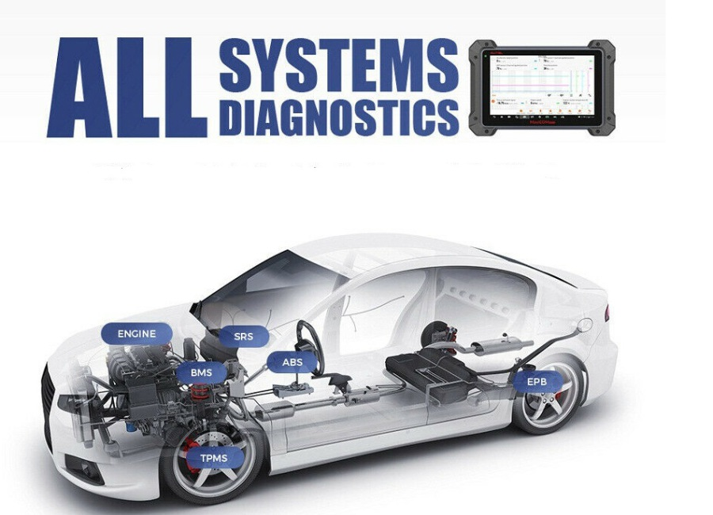
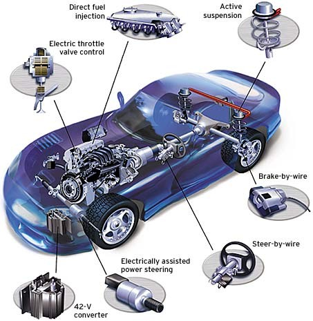

In modern vehicle diagnosing all systems is very important.
This is just an example of all vehicle system scan tool tablet.
This can be a tablet with wireless connection.

This is a picture with some of the modern car integrated modules for various functions.